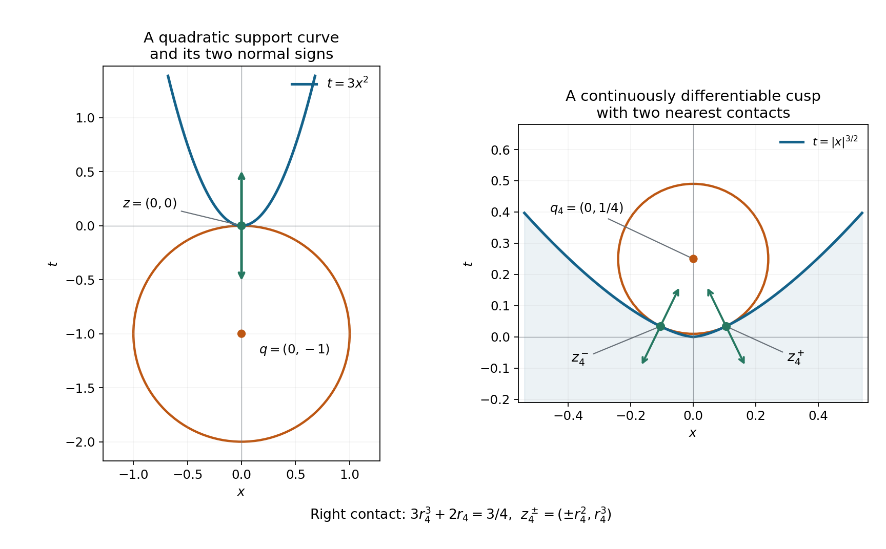
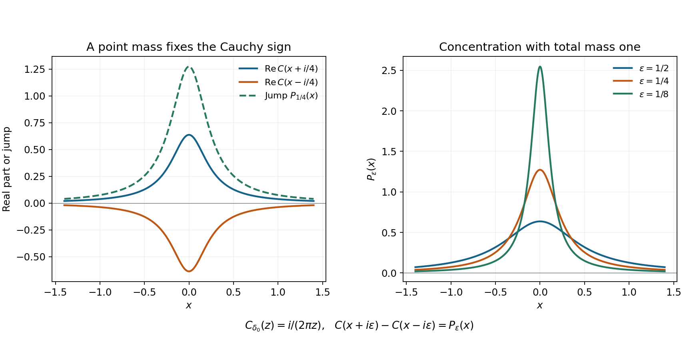

Support normals and analytic singularities
Written by GPT-6.1 Sol (OpenAI), October 2026. Original exposition, examples and solutions: CC0.
A smooth function can vanish on an open half-line and remain nonzero arbitrarily close to its endpoint. An analytic function cannot. Analytic wavefront records the corresponding obstruction one direction at a time: at a supporting boundary of a distribution's support, both normal directions must occur, even if the distribution is a smooth function.
Read Pulling back and combining analytic singularities, Sections 2, 4 and 7, for the analytic sequence criterion, coordinate changes and proper projection. Cauchy bounds and root counts supplies holomorphic Taylor expansion. The complete proof below gives the Cauchy-transform uniqueness argument and every supporting-normal step.
1. The statement concerns the support
Let \(u\) be a distribution on an open \(X\subset\mathbb R^n\). Suppose a real-valued \(C^1\) function \(h\), defined near \(x_0\in\operatorname{supp}u\), satisfies
\[ dh(x_0)\ne0,\qquad h(x)\le h(x_0)\quad (x\in\operatorname{supp}u\hbox{ near }x_0). \tag{SL1} \]Then the full proof, Theorem 3.1 and Corollary 4.1, gives
\[ (x_0,\pm dh(x_0))\in\operatorname{WF}_A(u). \tag{SL2} \]Positive multiples of each covector also occur. At an interior point of the support, a differentiable function with a local maximum has zero differential; the nonzero-normal hypothesis therefore excludes that situation. The supporting function and its maximum need only exist locally. Neither compact support of \(u\) nor a smooth support boundary is assumed.
For a point \(q\) outside the support, let \(z\) be a nearest support point, with the comparison valid locally. The ball centered at \(q\) and touching \(z\) supplies
\[ h(x)=-|x-q|^2,\qquad dh(z)=2(q-z). \tag{SL3} \]Thus both \((z,q-z)\) and \((z,z-q)\) belong to analytic wavefront. The signs do not depend on which side is called outward.
2. Why a single regular ray would force continuation
For a compactly supported one-dimensional distribution \(v\), form its Cauchy transform
\[ C_v(z)=\frac1{2\pi i}\,v_t((t-z)^{-1}),\qquad \operatorname{Im}z\ne0. \tag{SL4} \]In the upper half-plane it uses the positive Fourier frequencies. Analytic regularity in that ray gives a bounded compact-support sequence with arbitrarily high Fourier decay. Taking its index to be \(k+2\) bounds the \(k\)-th Cauchy derivative by \(E^{k+1}k!\), uniformly up to the boundary. A difference supported away from the point contributes the same type of bound. Holomorphic Taylor expansion therefore continues \(C_v\) through the point.
If \(v\) vanishes on a real interval on one side, the upper and lower transforms already agree across that interval. Continuation identifies them across the endpoint too. Their jump is
\[ C_v(x+i\epsilon)-C_v(x-i\epsilon) =(P_\epsilon*v)(x),\qquad P_\epsilon(x)=\frac{\epsilon}{\pi(x^2+\epsilon^2)}. \tag{SL5} \]The Poisson kernels have mass one and converge to the point mass. The jump consequently converges to \(v\), while continuation makes it converge to zero near the endpoint. This proves local vanishing.
In several variables, make a strict analytic supporting function one coordinate. Integrate along its level directions against every exponential \(e^{-i\eta\cdot y'}\). Proper projection keeps only covectors with zero fiber component, so absence of the normal ray passes to each one-dimensional distribution. The uniqueness argument makes every such projection zero. Fiber Fourier inversion then makes the original distribution zero, contradicting the support point. Conjugation supplies the other normal sign.
For a \(C^1\) supporting function, small exterior centers and their nearest support points approximate the desired normal. Closedness of analytic wavefront passes the inclusion to the limit. Example 4 computes this approximation explicitly.
3. Four examples
Example 1: smoothness does not erase a support endpoint
Define
\[ f(t)= \begin{cases} \exp(-1/t^2),&t<0,\\ 0,&t\ge0. \end{cases} \tag{SL6} \]Each derivative on the negative half-line is a polynomial in \(1/t\) times \(\exp(-1/t^2)\). Every such expression tends to zero at the origin, because the exponential dominates each fixed power. Induction on the derivative order shows that \(f\) is smooth and every derivative at zero is zero. It is nonzero at every negative point, so its support is \((-\infty,0]\).
The supporting function \(h(t)=t\) gives both analytic frequency rays at zero. Elsewhere \(f\) is analytic. Hence
\[ \operatorname{WF}(f)=\varnothing,\qquad \operatorname{WF}_A(f)=\{(0,\xi):\xi\ne0\}. \tag{SL7} \]The second equality uses that there are exactly two rays in a one-dimensional nonzero cotangent fiber. This is why a smooth-wavefront statement cannot replace the analytic theorem in a support argument.
Example 2: exact normals along a parabola
On the plane with coordinates \((x,t)\), let \(u(x,t)=\delta(t-3x^2)\). Its support is the parabola \(t=3x^2\), and \(h(x,t)=3x^2-t\) is zero throughout that support. Thus
\[ dh(x,3x^2)=(6x,-1),\qquad \operatorname{WF}_A(u) =\{(x,3x^2;\lambda(-6x,1)):\lambda\ne0\}. \tag{SL8} \]For the upper inclusion use the analytic coordinates \((x,s)=(x,t-3x^2)\). The distribution is the pullback of \(1\otimes\delta(s)\); the tensor and coordinate rules permit only multiples of \(ds=dt-6x\,dx\). For the reverse inclusion the supporting-normal theorem supplies both signs of \(dh=-ds\) at every curve point. Positive conicity supplies every nonzero multiple.
The exterior point \(q=(0,-1)\) has the unique nearest support point \((0,0)\), since
\[ x^2+(3x^2+1)^2=1+7x^2+9x^4\ge1, \tag{SL9} \]with equality only at zero. Its unit contact ball lies below the parabola and gives both vertical normal signs.
Example 3: one ball can touch two support points
Let
\[ u=(1+2i)\delta_{(-1,0)}+(3-i)\delta_{(2,1)}. \tag{SL10} \]Both coefficients are nonzero. A test supported near just one point shows that neither point disappears by cancellation. At either isolated support point any nonzero covector is the differential of a local supporting linear function. Consequently the analytic wavefront fiber at each point is the entire nonzero cotangent fiber.
For \(q=(0,2)\), both support points are nearest:
\[ |q-(-1,0)|^2=|q-(2,1)|^2=5. \tag{SL11} \]The contact vectors are \((1,2)\) and \((-2,1)\). Both signs occur at their respective base points. The theorem neither selects a unique nearest point nor identifies the two cotangent fibers.
Example 4: a \(C^1\) cusp needs a limiting normal
Let \(F=\{(x,t):t\le |x|^{3/2}\}\) and let \(u\) be its indicator function, viewed as a distribution. Its support is exactly \(F\). The function \(h(x,t)=t-|x|^{3/2}\) is \(C^1\), supports \(F\) at the origin, and has differential \((0,1)\) there. Therefore both vertical covectors occur in \(\operatorname{WF}_A(u)\).
There is no \(C^2\) supporting function at the origin with that same differential. Such a function, after subtracting its value, would be \(t+O(x^2+t^2)\). On the boundary \(t=|x|^{3/2}\), its positive leading term dominates the remainder for small nonzero \(x\), contradicting a supporting maximum.
For the exterior center \(q_j=(0,1/j)\), its two nearest points are
\[ z_j^\pm=(\pm r_j^2,r_j^3),\qquad 3r_j^3+2r_j=3/j,\qquad r_j>0. \tag{SL12} \]The cubic's left side is strictly increasing. Its solution satisfies \(r_j\le3/(2j)\), and hence
\[ j(q_j-z_j^\pm) =(\mp j r_j^2,1-jr_j^3)\longrightarrow(0,1). \tag{SL13} \]Exercise 6 proves that these are the actual global nearest points. They give the vertical limiting normal even though no \(C^2\) supporting function with that differential exists.

Figure 1. Left: the exact curve \(t=3x^2\), the unit ball centered at \((0,-1)\), and the two vertical covector signs at its contact point. Right: the exact cusp boundary \(t=|x|^{3/2}\) and the contact circle centered at \(q_4=(0,1/4)\). The two marked points are \((\pm r_4^2,r_4^3)\), where \(r_4\) is the positive root of \(3r^3+2r=3/4\); their plotted coordinates are numerical evaluations of these exact algebraic quantities. Arrows show both signs of \(q_4-z_4^\pm\), drawn with a common display scale. These are vectors identified with covectors using the Euclidean metric. Equations (SL9), (SL12)–(SL13), Exercise 6 and proof Corollary 4.1 establish the contact and limiting assertions.

Figure 2. For \(v=\delta_0\), \(C_v(z)=i/(2\pi z)\). Left: at height \(\epsilon=1/4\), the real parts of its upper and lower values are \(P_\epsilon/2\) and \(-P_\epsilon/2\), whose difference is \(P_\epsilon\). Right: the exact functions \(P_\epsilon\) for \(\epsilon=1/2,1/4,1/8\). Their mass is always one, while their mass outside \([-r,r]\) is at most \(2\epsilon/(\pi r)\). The plotted curves illustrate the kernel identity; proof Lemma 2.1 supplies distributional convergence. The pole at zero prevents a common factorial derivative bound as the height tends to zero.
4. Exercises
- Cauchy signs, 10 points. Compute the Cauchy transform of \(\delta_0\), its upper-minus-lower jump and the modulus of its \(k\)-th derivative at \(i\epsilon\). Explain why the common factorial bound in proof Lemma 1.1 fails.
- Choosing the analytic sequence index, 12 points. Prove (SN6) by substitution and show that replacing \(N=k+2\) by \(N=k+1\) makes the absolute integral diverge. Why is the uniform compact distributional bound also needed?
- A flat support endpoint, 12 points. Prove every smoothness and wavefront claim in Example 1. State exactly which theorem supplies the analytic covectors.
- A curved conormal, 12 points. Verify the complete analytic wavefront equality in Example 2, keeping the two covector components and the base point. Compute the normal signs at \(x=1/2\).
- Two contacts and complex weights, 14 points. Prove the support and full analytic wavefront assertions for (SL10). Check the two nearest-point vectors at \(q=(0,2)\), and decide whether either complex coefficient changes these directions.
- Nearest points on a cusp, 12 points. Prove (SL12) gives exactly the two nearest points to \(F\), and prove the quantitative convergence in (SL13).
- Why the projection must be proper, 14 points. On \(\mathbb R^2\) consider \(w=\sum_{j\ge1}\delta_{(j,1/j)}\). Prove this defines a distribution and that projecting it onto the second coordinate does not define a distribution by the usual support integral.
- All fiber frequencies are needed, 14 points. Prove that proper projection against every exponential separates a distribution as in (SN20). For any prescribed finite set of real frequencies, construct a nonzero compactly supported distribution annihilated by all those weighted projections.
5. Complete solutions
Solution 1
Evaluation at \(t=0\) in (SL4) gives
\[ C_{\delta_0}(z)=-\frac1{2\pi iz}=\frac{i}{2\pi z}. \tag{SE1} \]Subtracting its values at \(x+i\epsilon\) and \(x-i\epsilon\) gives \(\epsilon/(\pi(x^2+\epsilon^2))\), with positive sign. Differentiation gives
\[ C_{\delta_0}^{(k)}(z)=\frac{i(-1)^k k!}{2\pi z^{k+1}}, \qquad |C_{\delta_0}^{(k)}(i\epsilon)| =\frac{k!}{2\pi\epsilon^{k+1}}. \tag{SE2} \]Even the case \(k=0\) is unbounded as the height tends to zero. No fixed \(E\) can bound these values by \(E^{k+1}k!\) at every sufficiently small positive height. Consistently, the support-normal theorem puts the positive analytic ray in the wavefront of the point mass.
Solution 2
Set \(s=\xi/(1+\xi)\). Then \(\xi=s/(1-s)\), \(d\xi=(1-s)^{-2}ds\), and the integrand with \(N=k+2\) becomes \(s^k\,ds\). Integration over \(0<s<1\) gives \(1/(k+1)\). With \(N=k+1\), the transformed integrand is \(s^k/(1-s)\); on \(s\ge1/2\) it is at least \(2^{-k}/(1-s)\), whose integral diverges.
The analytic sequence agrees with the localized distribution near the point, but it can differ away from that neighborhood. Its common compact finite-order bound controls this difference when paired with derivatives of the Cauchy kernel away from its pole. Without that uniform bound, the remainder constants could depend without bound on \(N=k+2\), and the single factorial scale would not follow.
Solution 3
Inductively, differentiating a Laurent polynomial in \(t\) times \(e^{-1/t^2}\) gives another expression of that form. For every nonnegative integer \(M\), \(s^M e^{-s^2}\to0\) as \(s\to+\infty\): choose an integer \(L>M/2\) and use \(e^{s^2/2}\ge(s^2/2)^L/L!\). This bounds \(s^M e^{-s^2}\) by a constant times \(s^{M-2L}e^{-s^2/2}\), which tends to zero. Each derivative on \(t<0\) therefore approaches zero.
Define the derivatives on the other half-line to be zero. The fundamental theorem on a small negative interval, followed by the endpoint limit, proves that each extended derivative is the derivative of the preceding one at zero as well. This gives smoothness of every order and flatness at zero. Nonvanishing on \(t<0\) and vanishing on \(t>0\) identify the support. Smooth functions have empty ordinary wavefront. The function is analytic off zero; analytic functions have empty analytic wavefront there. Theorem 3.1 with \(h(t)=t\) gives both rays at zero, completing (SL7).
Solution 4
In coordinates \(s=t-3x^2\), the distribution is \(1\otimes\delta(s)\). The analytic tensor rule permits no \(x\)-covector because the constant factor is analytic, while the one-dimensional point mass has every nonzero normal covector. The differential of \(s\) is \(dt-6x\,dx\), so the coordinate pullback gives only \(\lambda(-6x,1)\). Conversely \(3x^2-t\) is a supporting function at every support point and has nonzero differential. Its two signed normals and positive conicity fill exactly that line of nonzero covectors. At \(x=1/2\), the base point is \((1/2,3/4)\), and the covectors are \(\lambda(-3,1)\), \(\lambda\ne0\). The tangent component must not be omitted.
Solution 5
A small bump around either point, missing the other, pairs to its nonzero coefficient. The support is therefore exactly those two points. At an isolated support point \(a\), a local linear function with any specified nonzero differential has a maximum on the local support, which consists only of \(a\). Theorem 3.1 gives both rays for that differential; allowing every differential fills the entire nonzero fiber. Outside the two points the distribution vanishes, so there are no further wavefront points.
The squared distances from \((0,2)\) are \(1+4=5\) and \(4+1=5\). Subtraction gives \(q-(-1,0)=(1,2)\) and \(q-(2,1)=(-2,1)\). Both signs occur, at different base points. Multiplying a point mass by a nonzero complex number does not remove its support or these normals. The two summands cannot cancel on disjoint neighborhoods.
Solution 6
Put \(a=1/j>0\). For a fixed \(x\), the nearest point in the vertical subgraph has height \(\min(a,|x|^{3/2})\). Symmetry permits \(x\ge0\). For \(x\ge a^{2/3}\), the squared distance is \(x^2\), minimized at the left endpoint. For \(0\le x\le a^{2/3}\), it is
\[ D(x)=x^2+(x^{3/2}-a)^2,\qquad D'(x)=\sqrt{x}\,(2\sqrt{x}+3x^{3/2}-3a). \tag{SE3} \]The expression in parentheses is strictly increasing as a function of \(\sqrt{x}\), negative at zero and positive at \(x=a^{2/3}\). It has exactly one zero, with \(x=r^2\) and \(2r+3r^3=3a\). Thus \(D\) decreases from zero to that point and increases to the endpoint. Its minimum is strictly smaller than the endpoint distance and than \(D(0)\). Reflection supplies exactly two minimizers, at \(\pm r^2\), of height \(r^3<a\).
The cubic gives \(0<r\le3/(2j)\). Consequently
\[ |jr^2|\le\frac9{4j},\qquad |jr^3|\le\frac{27}{8j^2}. \tag{SE4} \]These bounds prove both convergence of the base points to zero and the scaled normal limit in (SL13). Each unscaled normal is nonzero because its vertical component is \(a-r^3>0\).
Solution 7
A compact subset of the \((y,t)\)-plane has bounded \(y\)-coordinate. It therefore meets only finitely many points \((j,1/j)\). The sum pairs with each compact test as a finite sum and satisfies the order-zero compact seminorm estimate with a constant equal to that finite number. It defines a distribution.
Projection of its support is not proper: the inverse image of the compact interval \([0,1]\) contains all the points and is unbounded in \(y\). For a nonnegative compact test \(\phi(t)\) equal to one near zero, a proposed support integral would contain \(\sum_{j\ge1}\phi(1/j)\). Infinitely many summands equal one, so it diverges. A compact fiber cutoff cannot equal one at all support points over this target test. This is exactly the missing condition in the proper-projection theorem.
Solution 8
For a compact test \(\psi(y,t)\), its fiber Fourier inversion converges with every derivative, after multiplication by a compact fiber cutoff equal to one near the relevant proper support. Integration by parts in \(y\) gives arbitrary polynomial decrease of \(\widehat\psi(\eta,t)\), uniformly with the finitely many \(t\)-derivatives needed. Derivatives of the exponential cost a fixed polynomial in \(\eta\). The paired integral therefore converges in the distribution's finite-order seminorm. Every term is the corresponding zero weighted projection, so the pairing with \(\psi\) is zero.
For a finite prescribed list \(\eta_1,\ldots,\eta_k\) in one fiber dimension and a nonzero \(\phi\in C_c^\infty(\mathbb R)\), take
\[ w(y,t)=\left[\prod_{\ell=1}^k (\partial_y-i\eta_\ell)\delta_0(y)\right]\phi(t). \tag{SE5} \]Its weighted projection at a real frequency \(\eta\) is
\[ \pi_*(e^{-i\eta y}w) =\prod_{\ell=1}^k(i\eta-i\eta_\ell)\,\phi(t). \tag{SE6} \]It vanishes at each listed frequency. The distribution itself is nonzero because the product of differential operators has leading term \(\partial_y^k\); pairing its fiber factor with a test equal to \(y^k\) near zero yields \((-1)^k k!\), while all lower derivatives give zero. Its support is compact. For an empty list, \(\delta_0(y)\phi(t)\) already supplies the assertion. Thus a finite list cannot replace all Fourier weights.
References
Lars Hörmander, The Analysis of Linear Partial Differential Operators I, Theorem 8.5.6 and its normal-set formulation, provides the classical context. The proof here includes one-ray Cauchy continuation, proper tangential projection and the \(C^1\) nearest-point limit. The Sokhotski–Plemelj jump normalization and the exact programme proof dependencies are linked in the complete proof.
Complete proof
A distribution cannot stop across a supporting surface while remaining analytically regular in either of its normal directions. The proof first turns regularity in one frequency ray into continuation of a Cauchy transform. Tangential projection then reduces the several-variable assertion to that one-dimensional argument.
We use the bounded compact-support sequence definition of analytic wavefront. Its localization and the analytic coordinate and proper-projection rules are proved in Pulling back and combining analytic singularities, Sections 2, 4, 6 and 7. Analytic multiplication and ordinary-wavefront inclusion are proved in Analytic directions of holomorphic boundary values. The Cauchy derivative estimates and holomorphic identity theorem are the elementary complex-analysis inputs in Cauchy bounds and root counts. The normalized simple-pole boundary limit is Theorem 4.1 of Cauchy kernels and distributional boundary limits. Schwartz functions and Fourier inversion, Sections F1-F5, proves the Fourier estimates and inversion used below. All uses below specify their scope; we do not require an analytic pseudodifferential operator or a preparation theorem.
1. A regular frequency ray continues the Cauchy transform
Our Fourier convention in one dimension is
\[ \widehat v(\xi)=v_t(e^{-it\xi}). \tag{SN1} \]For a compactly supported distribution \(v\), an exponential or a kernel in a pairing is multiplied by any fixed smooth cutoff equal to one near its support. The pairing is independent of that cutoff.
Suppose \((0,+1)\notin\operatorname{WF}_A(w)\). There are a fixed neighborhood \(J\) of zero and distributions \(w_N\), all supported in one compact set and bounded there with one common distributional order, such that \(w_N=w\) on \(J\) and
\[ |\widehat w_N(\xi)| \le A^{N+1}N^N(1+\xi)^{-N}, \qquad \xi>0,\quad N\ge1. \tag{SN2} \]In one dimension the positive open cone is the whole positive ray. A common compact distributional bound also gives a polynomial Fourier bound with fixed constants and order. This is exactly the analytic sequence criterion, not an exponential estimate for one fixed smooth cutoff.
Choose \(v=\chi w\), with \(\chi=1\) on a smaller neighborhood of zero and compact support inside the interval on which \(w\) is defined. Define
\[ C_v(z)=\frac1{2\pi i}\,v_t\!\left(\frac1{t-z}\right), \qquad \operatorname{Im}z\ne0. \tag{SN3} \]Differentiation of the kernel in a common compact test seminorm shows that this is holomorphic in each half-plane.
Lemma 1.1. Under (SN2), the upper-half-plane function \(C_v\) extends holomorphically through zero.
Proof. For \(\operatorname{Im}z>0\), elementary integration gives
\[ \frac1{t-z}=i\int_0^\infty e^{i(z-t)\xi}\,d\xi. \tag{SN4} \]The exponential decay at positive height allows every finite number of \(t\)-derivatives to pass under the integral. The fixed compact distributional estimate therefore justifies pairing this identity with \(w_N\), first on finite integration intervals and then in the corresponding test seminorm. It follows that
\[ C_{w_N}^{(k)}(z) =\frac1{2\pi}\int_0^\infty (i\xi)^k e^{iz\xi}\widehat w_N(\xi)\,d\xi. \tag{SN5} \]Take \(N=k+2\). Substitution \(s=\xi/(1+\xi)\) proves the exact integral identity
\[ \int_0^\infty \xi^k(1+\xi)^{-k-2}\,d\xi =\int_0^1s^k\,ds=\frac1{k+1}. \tag{SN6} \]Thus, uniformly for all \(z\) in the upper half-plane,
\[ |C_{w_{k+2}}^{(k)}(z)| \le \frac{A^{k+3}(k+2)^{k+2}}{2\pi(k+1)} \le B^{k+1}k! \tag{SN7} \]with one \(B\). To check the last conversion without an asymptotic assumption, for \(k\ge1\) the increasing function \(\log t\) gives
\[ \log(k!)\ge\int_1^k\log t\,dt=k\log k-k+1. \tag{SN8} \]Also \((1+2/k)^k\le e^2\), and any fixed polynomial in \(k\) is bounded by a fixed exponential. These facts bound the ratio in (SN7) by a fixed exponential in \(k\). Increase \(B\) once for \(k=0\).
There is \(a>0\), independent of \(N\), such that \(d_N=v-w_N\) vanishes on \((-a,a)\). The family \(d_N\) has a common compact support and one uniform finite-order estimate, say of order \(m\). For \(|z|<a/4\), insert a smooth compact cutoff equal to one on that support and zero on \((-a/2,a/2)\). On the support of this cutoff the denominator stays a fixed distance from zero. The finite-order estimate and the derivative formula for \((t-z)^{-1}\) give
\[ |C_{d_N}^{(k)}(z)| \le C^{k+1}(k+m)! \le D^{k+1}k!, \qquad |z|<a/4, \tag{SN9} \]uniformly in \(N\). Fixed powers of \(k+m\) are again absorbed into \(D^{k+1}\). The cutoff can be used because \(d_N\) vanishes on the excluded interval. Kernel derivatives on the cutoff transition have the same bound.
Since \(C_v=C_{w_{k+2}}+C_{d_{k+2}}\) above the real axis, (SN7)–(SN9) imply
\[ |C_v^{(k)}(z)|\le E^{k+1}k!, \qquad |z|<a/4,\quad \operatorname{Im}z>0. \tag{SN10} \]Choose a positive \(\delta\) sufficiently small that \(i\delta\) lies in this region and \(4\delta<1/E\). The Taylor series at \(i\delta\) converges on a disk of radius at least \(1/E\). It agrees with \(C_v\) near its center by holomorphic Taylor expansion. The identity theorem makes it agree on the connected intersection with the upper half-plane. That disk contains a neighborhood of zero, proving the extension. No one cutoff has been asserted to have exponentially decreasing Fourier transform. \(\square\)
2. One-sided vanishing forces both analytic frequency rays
Lemma 2.1. Let \(w\) be a distribution on an interval about zero. If it vanishes on either \((0,b)\) or \((-b,0)\), with \(b>0\), and \((0,+1)\notin\operatorname{WF}_A(w)\), then it vanishes on a neighborhood of zero.
Proof. Use the compact localization \(v\) above, chosen equal to \(w\) near zero, and let \(G\) be the extension in Lemma 1.1. On the stated side interval, \(v=0\). Its Cauchy kernel pairing is consequently holomorphic across each point of that interval: its support stays away from a sufficiently small complex disk around the point. On the upper part of that disk it equals \(G\), so the identity theorem identifies its lower part with \(G\) as well. On a small lower half-disk about zero, \(C_v\) and \(G\) are both holomorphic. They agree on the open lower patch just found, hence on that connected half-disk.
The difference of the two Cauchy values at positive height is
\[ C_v(x+i\epsilon)-C_v(x-i\epsilon) =v_t\!\left(\frac{\epsilon} {\pi((t-x)^2+\epsilon^2)}\right). \tag{SN11} \]The sign follows directly by subtracting the two denominators in (SN3). The right side is \(P_\epsilon*v\), where
\[ P_\epsilon(s)=\frac{\epsilon}{\pi(s^2+\epsilon^2)}, \qquad P_\epsilon\ge0,\quad\int_{\mathbb R}P_\epsilon=1. \tag{SN12} \]The normalization follows by the arctangent antiderivative, or from the simple-pole boundary formula. For every compact smooth test \(\phi\), \(P_\epsilon*\phi\to\phi\) uniformly with every fixed finite number of derivatives: write the difference as the integral of \(\phi(x-s)-\phi(x)\); on \(|s|<r\) use uniform continuity, and on \(|s|\ge r\) use
\[ \int_{|s|\ge r}P_\epsilon(s)\,ds \le \frac{2\epsilon}{\pi r}. \tag{SN13} \]The same argument applies to each test derivative. Pairing in the compact distributional seminorm proves \(P_\epsilon*v\to v\) in distributions. Compactly supported localization in \(t\) justifies all kernel pairings; (SN11) can equivalently be obtained by applying the exact simple-pole limit to the convolved test.
On a smaller real interval both branches in the left side of (SN11) are restrictions of the same holomorphic \(G\). Their difference tends uniformly to zero there, and therefore tends to zero distributionally. Its other limit is \(v\). Hence \(v=0\), and so \(w=0\), near zero. The argument uses only that there is a zero interval on one side; either side works. \(\square\)
Corollary 2.2. If \((t,+1)\notin\operatorname{WF}_A(w)\) for every \(t\) in a connected open interval \(I\), and \(w\) vanishes on a nonempty open subinterval, then \(w=0\) on \(I\).
Proof. Let \(J\) be the maximal connected open interval on which \(w=0\) and which contains the given zero interval. If an endpoint of \(J\) lies in \(I\), Lemma 2.1 extends vanishing through that endpoint, a contradiction. Thus \(J=I\). This proves uniqueness, not full analyticity of \(w\). \(\square\)
Conjugation changes the frequency sign exactly. For a complex-linear distribution define \(\overline w(\phi)=\overline{w(\overline\phi)}\). Directly,
\[ \widehat{\overline{w_N}}(\xi) =\overline{\widehat w_N(-\xi)},\qquad \operatorname{WF}_A(\overline w) =\{(x,-\xi):(x,\xi)\in\operatorname{WF}_A(w)\}. \tag{SN14} \]Indeed, conjugating a bounded compact-support analytic sequence retains all its bounds and its equality on the neighborhood. This proves one inclusion; conjugating twice proves the reverse. Conjugation leaves support unchanged.
3. A supporting analytic function produces a singular normal
Theorem 3.1. Let \(u\in\mathcal D'(X)\), where \(X\subset\mathbb R^n\) is open. Suppose \(x_0\in\operatorname{supp}u\), \(h\) is real-valued and real analytic near \(x_0\), and
\[ dh(x_0)\ne0,\qquad h(x)\le h(x_0) \quad\hbox{for }x\in\operatorname{supp}u\hbox{ near }x_0. \tag{SN15} \]Then
\[ (x_0,dh(x_0)),\ (x_0,-dh(x_0)) \in\operatorname{WF}_A(u). \tag{SN16} \]The statement is local. It requires no compact support for \(u\).
Proof. Translate \(x_0\) to zero and subtract the constant value \(h(x_0)\). Replace \(h\) by \(h(x)-|x|^2\); this keeps its differential at zero and makes its maximum strict on the nearby support.
Here is the needed analytic coordinate construction. After permuting coordinates let \(a=\partial_{x_n}h(0)\ne0\). The convergent real power series extends holomorphically to a complex polydisk. Reduce it so that \(|\partial_{x_n}h-a|\le |a|/2\). Solving \(h(x',s)=t\) is the fixed-point equation
\[ s=\frac{t-h(x',0)}a -\frac{h(x',s)-h(x',0)-as}{a}. \tag{SN27} \]On a fixed small closed complex \(s\)-disk the right side has Lipschitz constant at most \(1/2\), by integration of its derivative on line segments. For sufficiently small complex \((x',t)\), its value at zero has modulus at most half the disk radius, so it maps that disk into itself. Starting at zero, the iterates are holomorphic in the parameters and their successive differences are bounded by a geometric series, uniformly on a smaller parameter polydisk. They converge to the unique fixed point. The limit is holomorphic: the iterated Cauchy integral formula passes to the uniform limit and gives its convergent local power series. Real parameters give real iterates and hence a real limit. Thus \(x\mapsto(x',h(x))\) and the constructed inverse are real analytic on neighborhoods of zero.
Use these coordinates \(y=(y',t)\). The analytic coordinate wavefront rule, applied to this map and its inverse, preserves the asserted inclusion of the differential. It suffices to show that the transformed distribution, denoted \(v\), has both signed vertical covectors at zero. Its support satisfies
\[ t\le0,\qquad \operatorname{supp}v\cap\{t=0\}=\{0\} \quad\hbox{locally}. \tag{SN17} \]Choose a small bounded open ball \(Y\) in the \(y'\)-space, with its closure in the coordinate neighborhood. Since the compact side \(\partial Y\times\{0\}\) misses the support, after shrinking an interval \(I\) about zero its entire side \(\partial Y\times I\) misses the support. We can arrange this with a surrounding collar, so projection of the support in \(Y\times I\) to \(I\) is proper: over every compact subinterval, the support stays inside a compact subset of \(Y\). In dimension one the fiber is the singleton \(\mathbb R^0\), and this statement is automatic.
Assume for a contradiction that \((0,dt)\notin\operatorname{WF}_A(v)\). Closedness of analytic wavefront gives a neighborhood of zero free of that vertical direction. By (SN17) and compactness of \(\overline Y\), after reducing \(I\) all support points in \(Y\times I\) lie in this neighborhood. To verify that reduction, any contrary sequence has \(t_j\to0\) and a convergent subsequence of its \(y'_j\); its limit is a support point at \(t=0\), hence zero. Points outside the support have no wavefront in any direction. Consequently there is no positive vertical wavefront covector anywhere in \(Y\times I\).
For each real \(\eta\in\mathbb R^{n-1}\), multiply \(v\) by the entire analytic function \(e^{-i\eta\cdot y'}\) and project:
\[ v_\eta(t)=\pi_*\bigl(e^{-i\eta\cdot y'}v\bigr), \qquad \pi(y',t)=t. \tag{SN18} \]Analytic multiplication cannot introduce analytic wavefront directions. The proper-projection theorem uses exactly covectors with zero fiber component. It therefore yields
\[ (t,+1)\notin\operatorname{WF}_A(v_\eta) \quad(t\in I). \tag{SN19} \]Every \(v_\eta\) vanishes for positive \(t\). Corollary 2.2 gives \(v_\eta=0\) on this same interval \(I\) for every \(\eta\). No uniform analytic estimate as \(|\eta|\to\infty\) is being claimed or needed.
These equalities force \(v=0\) in \(Y\times I\). Here is the full separation step. Given \(\psi\in C_c^\infty(Y\times I)\), Fourier inversion in its fiber variables gives
\[ \psi(y',t)=(2\pi)^{1-n} \int_{\mathbb R^{n-1}} e^{iy'\cdot\eta} \widehat\psi(\eta,t)\,d\eta . \tag{SN20} \]The fiber transform and each of its fixed \(t\)-derivatives decrease faster than every power of \(|\eta|\), by repeated integration by parts. Their \(t\)-supports stay in one compact subinterval of \(I\). Properness supplies one compact fiber cutoff equal to one near the support of \(v\) over that subinterval. Insert it in (SN20) before pairing with \(v\). Differentiating the integrand through the finite distributional order costs only a fixed polynomial in \(\eta\), so the integral converges in that compact test seminorm. Each paired integrand is \(v_{-\eta}(\widehat\psi(\eta,\cdot))=0\). Thus \(v(\psi)=0\). For a zero-dimensional fiber (SN20) is just the original test itself.
This contradicts \(0\in\operatorname{supp}v\), and proves \((0,dt)\in\operatorname{WF}_A(v)\). Applying the same conclusion to \(\overline v\), which has the same support, and using (SN14), proves the negative normal as well. Pulling the two covectors back gives (SN16). \(\square\)
4. Smooth supporting functions and nearest points
Corollary 4.1. The conclusion (SN16) remains valid if \(h\) in (SN15) is merely \(C^1\).
Proof. Work in a small closed ball inside \(X\), write \(F=\operatorname{supp}u\) there, and put \(p=dh(x_0)\ne0\). For large positive integers \(j\), set \(q_j=x_0+p/j\), and choose a point \(z_j\in F\) nearest to \(q_j\). A nearest point exists by compactness. The comparison point \(x_0\) gives
\[ |z_j-q_j|\le |p|/j,\qquad |z_j-x_0|\le2|p|/j. \tag{SN21} \]Thus the minimizers lie in the interior of the chosen ball for large \(j\), so they are local nearest support points in the original open set. Since \(h(q_j)=h(x_0)+|p|^2/j+o(1/j)>h(x_0)\), the point \(q_j\) is outside \(F\) for large \(j\). In particular \(z_j\ne q_j\).
Set \(w_j=z_j-x_0\). Squaring the first comparison in (SN21) gives
\[ j|w_j|^2\le2p\cdot w_j. \tag{SN22} \]The supporting inequality and differentiability give
\[ p\cdot w_j\le o(|w_j|). \tag{SN23} \]If \(w_j\ne0\), division of (SN22) by \(|w_j|\), followed by (SN23), shows \(j|w_j|\to0\). It is also true along indices with \(w_j=0\). Therefore
\[ z_j\to x_0,\qquad j(q_j-z_j)=p-jw_j\longrightarrow p. \tag{SN24} \]The analytic function \(g_j(x)=-|x-q_j|^2\) has a local maximum over the support at \(z_j\), with nonzero differential \(2(q_j-z_j)\). Theorem 3.1 and positive conicity put \((z_j,\pm j(q_j-z_j))\) in \(\operatorname{WF}_A(u)\). This wavefront set is closed in the nonzero cotangent bundle. The limit covectors \(\pm p\) are nonzero, so (SN24) proves the assertion. \(\square\)
Corollary 4.2 (a ball touching the support). If \(q\notin\operatorname{supp}u\) has a nearest support point \(z\) lying in \(X\), with the nearest-point comparison valid on a neighborhood, then
\[ (z,\pm(q-z))\in\operatorname{WF}_A(u). \tag{SN25} \]Indeed \(g(x)=-|x-q|^2\) has its supporting maximum at \(z\), and \(dg(z)=2(q-z)\ne0\). Positive conicity removes the factor two. Local compact minimization is enough; no global minimum on an unbounded set is needed.
Let \(\mathcal N(F)\) consist of both signs of all nonzero differentials of local \(C^1\) supporting functions for \(F\). Then
\[ \overline{\mathcal N(\operatorname{supp}u)} \subset\operatorname{WF}_A(u), \tag{SN26} \]where the closure is relative to the nonzero cotangent bundle. This follows from Corollary 4.1 and closedness, not from a smooth-wavefront support theorem.
References
The supporting-normal inclusion is a classical analytic uniqueness theorem. Lars Hörmander, The Analysis of Linear Partial Differential Operators I, Theorem 8.5.6 and its normal-set formulation, give the named general context. The proof above supplies the one-frequency-ray uniqueness argument explicitly through Cauchy continuation, uses the exact available analytic coordinate and proper-projection proofs, and includes the \(C^1\) nearest-point limit. Distributional Cauchy boundaries are credited to the classical Sokhotski–Plemelj formula; the linked programme lesson proves the normalization and finite-test convergence used here.